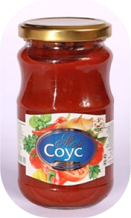
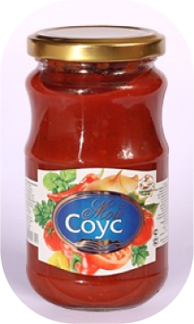

Соус томатный «Мой соус»
Состав: паста томатная, вода питьевая, сахар-песок, соль поваренная пищевая, лук репчатый свежий, загуститель, чеснок, карри, перец красный молотый, майоран, кислота уксусная пищевая, консерванты.
Состав: паста томатная, вода питьевая, сахар-песок, соль поваренная пищевая, лук репчатый свежий, загуститель, чеснок, карри, перец красный молотый, майоран, кислота уксусная пищевая, консерванты.
